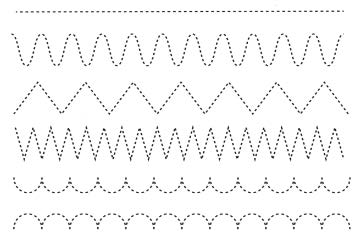

Unit One - Lesson 4: Tracing dots to complete patterns
Lesson 4
Tracing dots to complete patterns

Trace dotted pattern 1.
Keyboard alternative
Trace dotted pattern 2.
Keyboard alternative
Trace dotted pattern 3.
Keyboard alternative
Trace dotted pattern 4.
Keyboard alternative
Trace dotted pattern 5.
Keyboard alternative
Copy the following patterns in your exercise book.